Construction works
Practical building work for residential and commercial spaces, coordinated around the requirements of each site.
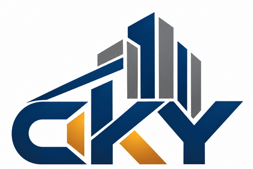
Selangor, Malaysia · Since 2013
Construction and renovation for homes and business spaces—planned around how you use the space and finished with purpose.
From the first discussion to the final handover, every detail should have a reason.
What we do
Speak with us about the scope below. We will help clarify the work required before the project begins.
Practical building work for residential and commercial spaces, coordinated around the requirements of each site.
Improve an existing space with a clearer layout, refreshed surfaces and better everyday function.
Finishing work that brings floors, walls, ceilings, fixtures and built elements together as one considered space.
Targeted repair and improvement work to renew worn areas, address practical issues and extend useful life.
Selected work
A selection of CKY Construction work across structural construction, residential improvements, finishes and custom details.
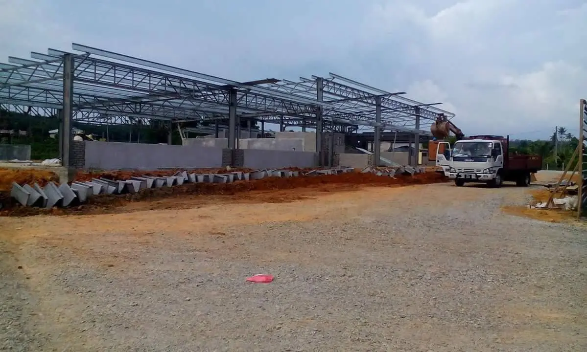
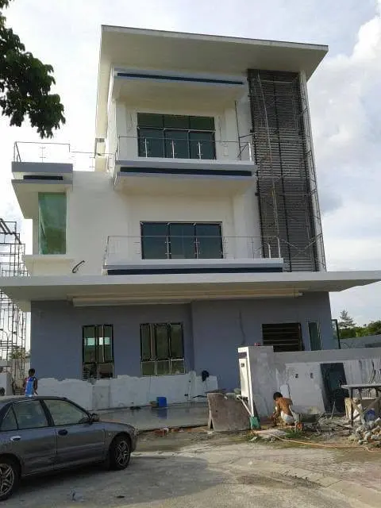
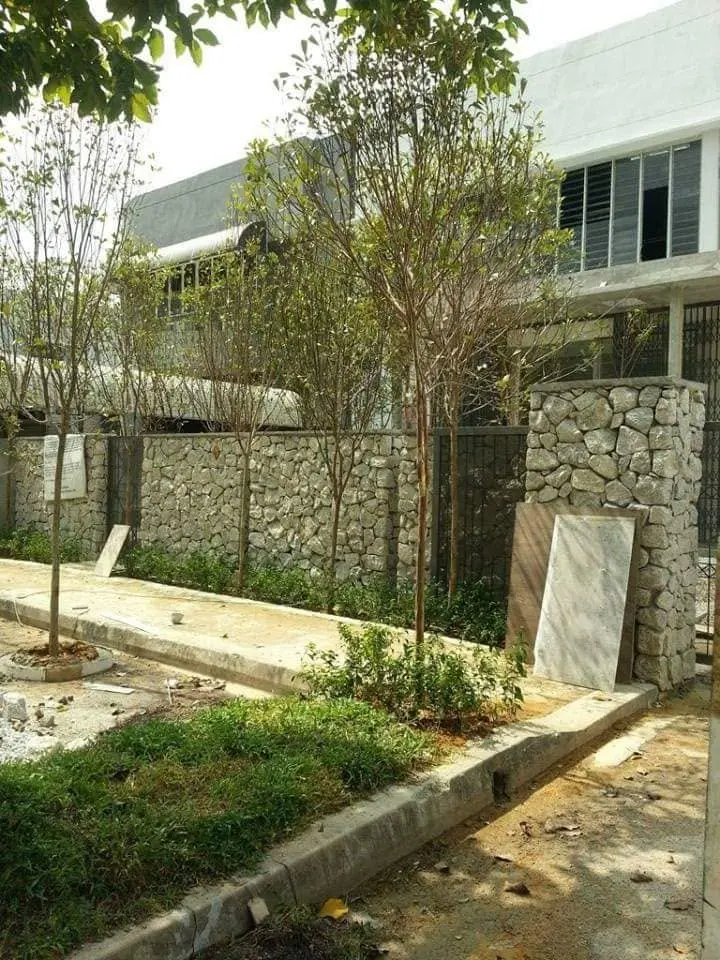
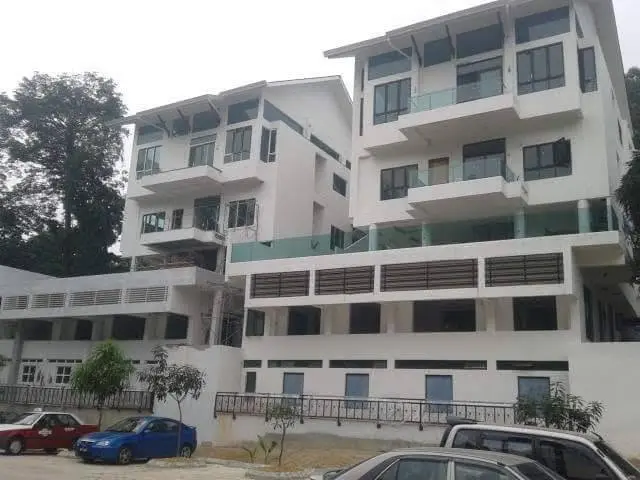
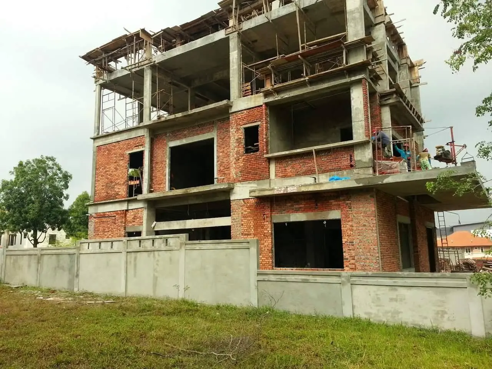
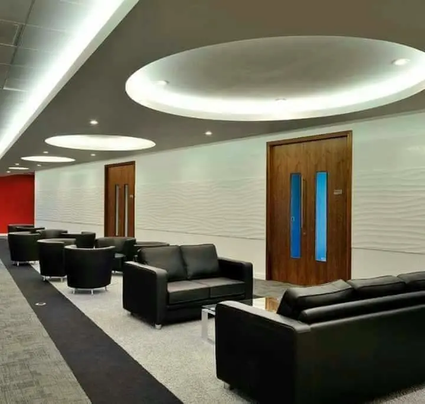
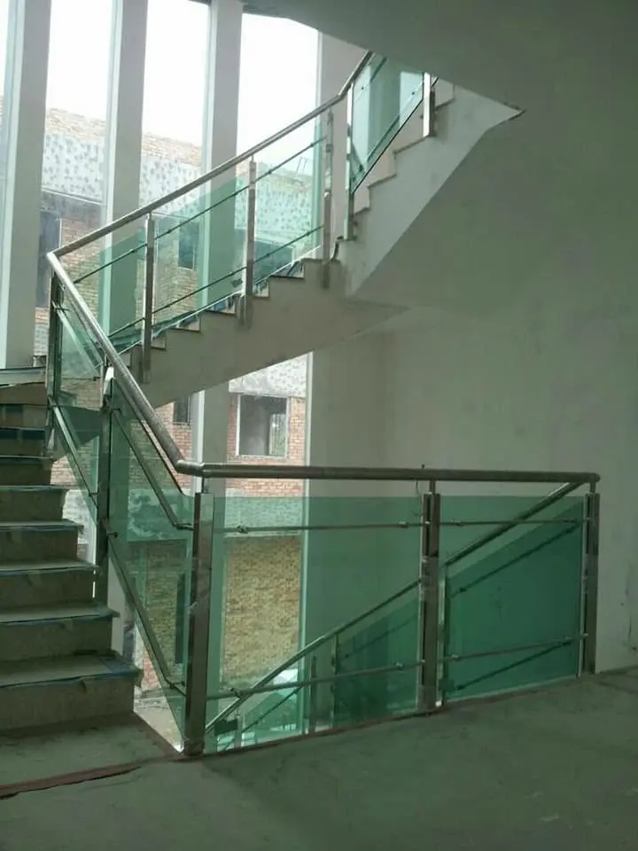
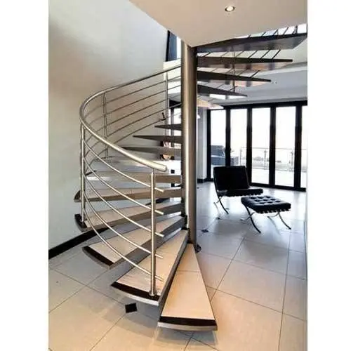
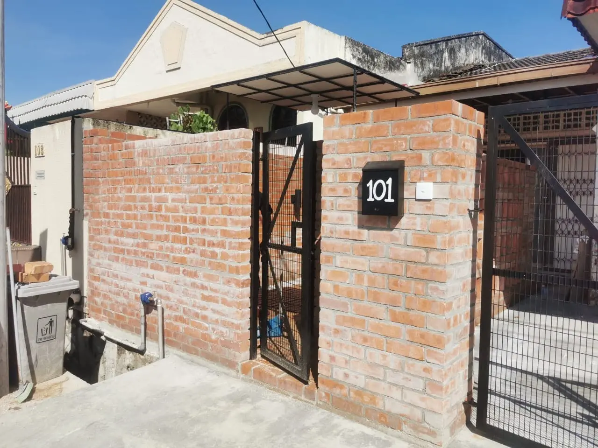
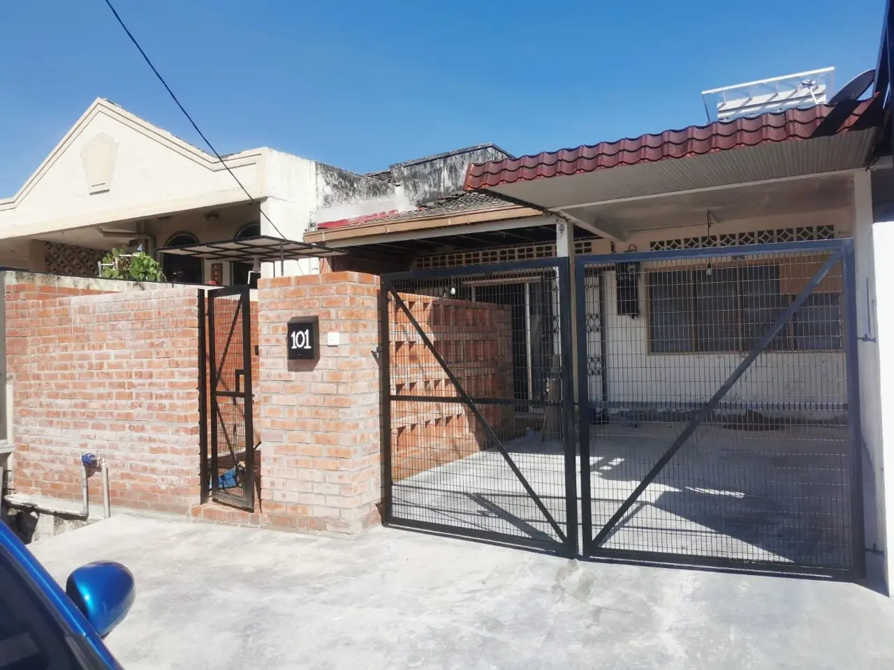
About CKY
CKY Construction is a registered construction business in Selangor, Malaysia. The business commenced on 25 April 2013 and is registered for construction work.
For every enquiry, the first priority is to understand the site, the intended use and the practical scope. That creates a clearer path from planning to execution—and a finished space that feels considered rather than improvised.
View public business recordOur approach
A practical sequence keeps expectations aligned and decisions visible.
Discuss the space, priorities, timing and expected result.
Clarify the scope and the work that needs to happen.
Coordinate the agreed work with attention to site conditions.
Review the outcome and close out the agreed scope.
What matters
Recommendations should work for the space, not just look good on paper.
Clear conversations early help reduce uncertainty during the work.
The small junctions, alignments and surfaces shape the final impression.
Have a space in mind?
Share a few details about your property, the work you are considering and your preferred timing.